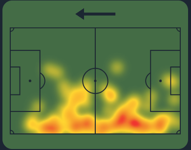

Career
Andrea began his career in youth teams, quickly showing talent and dedication. After various experiences in Serie A, he joined Juventus, where he continues to grow, showcasing his adaptability and technical skills.

Andrea Cambiaso is a young defender for Juventus and the Italian national team, known for his skill and offensive contributions.
Born in 2000 in Genoa, Andrea Cambiaso is a promising Italian football talent. He began his career in the youth teams of Genoa, where he quickly gained attention for his versatility and speed as a defender. After making his Serie A debut with Genoa, he joined Juventus in 2021, continuing to develop his skills. Cambiaso is known for his tactical intelligence and contributions in both defensive and offensive plays. In addition to his successes on the field, he participates in initiatives to promote sports among young people.
Andrea began his career in youth teams, quickly showing talent and dedication. After various experiences in Serie A, he joined Juventus, where he continues to grow, showcasing his adaptability and technical skills.
Andrea Cambiaso's heatmap highlights his versatility, showing active contributions in both defensive and offensive areas. He frequently covers wide positions and supports both the backline and attacking plays, demonstrating his adaptability on the field.
Andrea Cambiaso is a footballer dedicated to promoting youth football and spreading sports values. He participates in events aimed at young athletes, collaborating with sports associations to encourage fair play and teamwork. He is active in charity events, raising funds for social causes, and uses social media to inspire and motivate fans. Additionally, he has conducted coaching clinics and supported inclusion initiatives in the sports world, making football accessible to everyone.
“Dedication is what separates the good from the great.”